在 Docker 中用 Jenkins 搭建 Android 自动化打包
文章目录
Jenkins 是一个持续集成的工具，帮你构建和打包自动化，不用手动做这些操作。构建完成后可以帮你上传到第三方测试平台，或者做其他一些操作。例如：发送邮件通知测试人员可以开始测试了，邮件中包含下载地址，或者二维码。整个流程不需要手动管理，非常高效。
Docker 中的 Jenkins
Jenkins 官方提供 docker 的镜像，我们可以直接使用。但如果要用来打包 Android 项目还需要把 Android SDK 装上，不然没法构建 Android 项目。
所以我们基于 Jenkins 镜像进行定制，把它改造成带有 Android SDK 的镜像。
命令行管理 SDK
由于在 docker 中是没有 GUI 的，所以在构建之前我们需要了解一下怎么在命令行下管理 Android SDK 。
列出所有已安装、可安装、可更新的包
|
|
安装指定的包
|
|
使用 sdkmanager 时会提示要你同意协议，在 docker 中我们肯定是不会每次安装一个都去输入 yes 去同意。所以通过 Linux 的管道来自动同意协议。命令就变成了
|
|
一次性更新全部
|
|
构建带有 Android 环境的 Jenkins
了解了怎么在命令行中怎么管理 Android SDK 后，我们就可以来构建带有 Android 环境的 docker 镜像了。编写如下 Dockerfile
|
|
在 Dockerfile 中安装的 SDK 包，需要根据自己项目动态调整，也没有必要所有的都安装，用不到的也没必要安装，不然构建出来的镜像很大。
写好 Dockerfile 后使用 docekr build -t jenkand:v1 . 来构建。这里如果网速不好，花费的时间是比较久的，docker 可以使用国内的加速会快一些。
运行容器
|
|
运行起来之后会输出管理员密码，用来初始化安装。
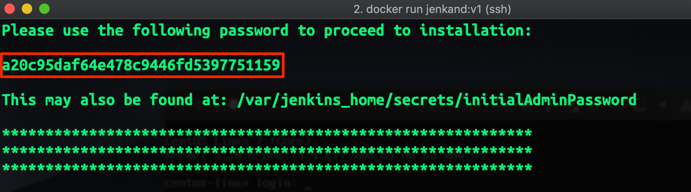
在浏览器中输入 127.0.0.1 访问 Jenkins ，输入控制台打印的密码，点击 Continue。
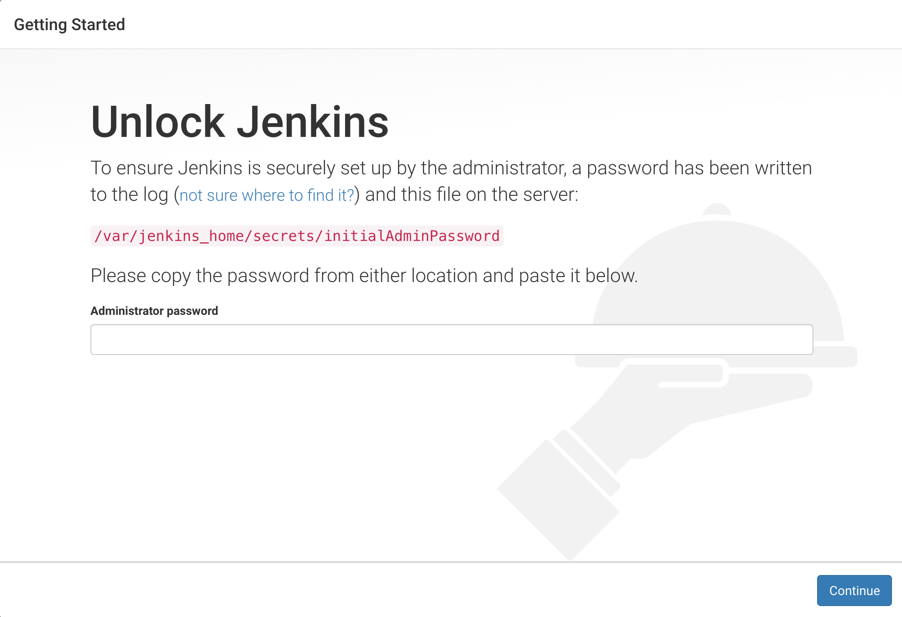
接下来会让你选择安装默认的插件还是自定义安装，我们选择默认就可以了。
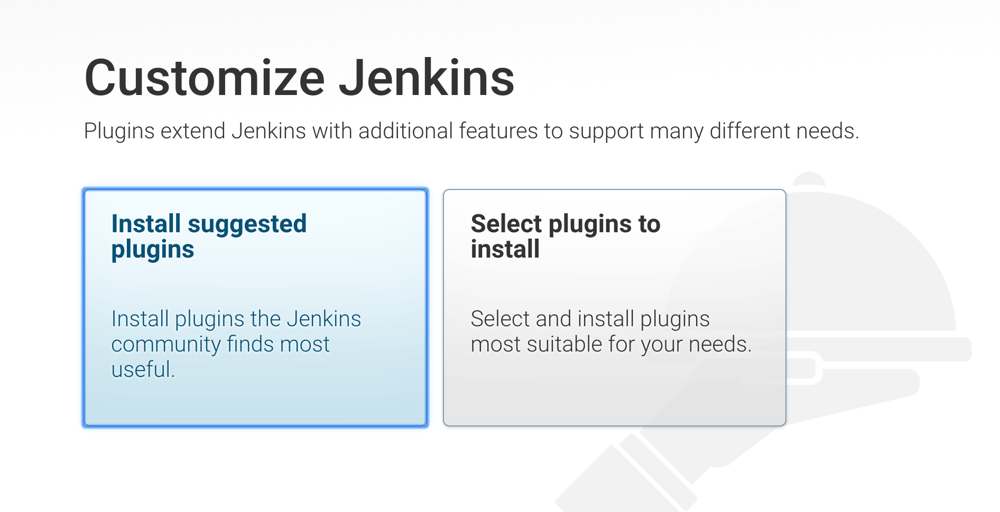
安装插件需要花一些时间，喝杯茶再回来。有些插件无法安装成功，我们可以以后再装，点击 Continue。
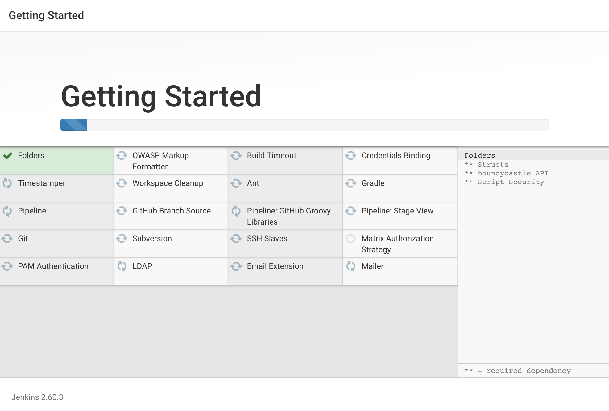
紧接着创建第一个管理员用户，输入相关信息后点击 Save and Finish 。
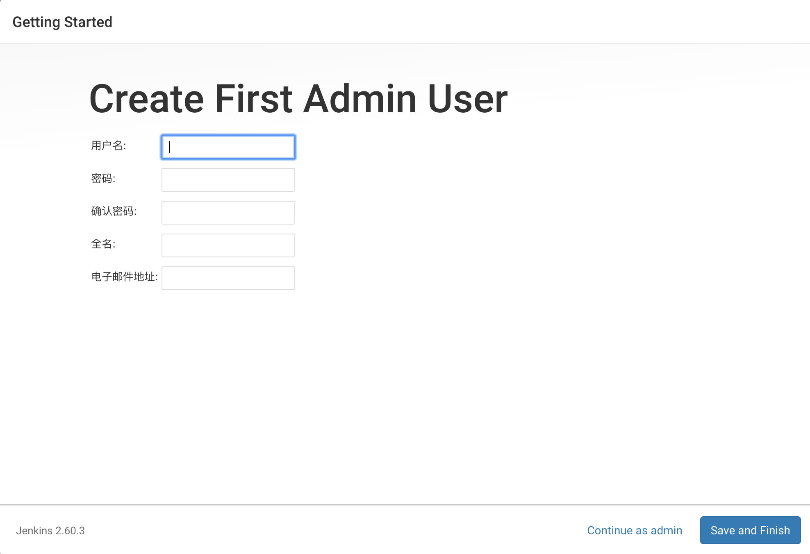
Jenkins 就可以用了，但是要想打包 Android 程序还要装一些插件。
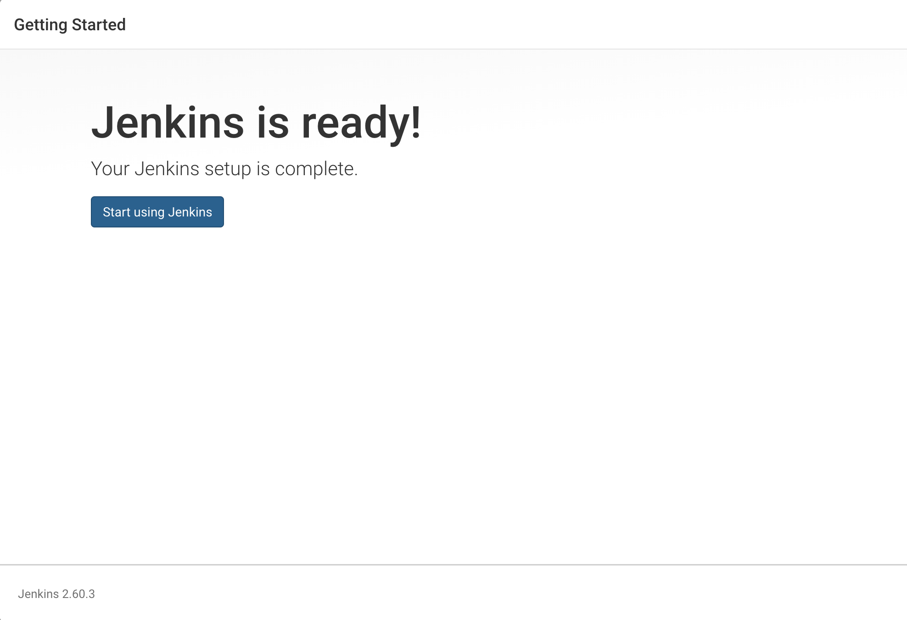
配置 Android 环境
上一节，我们搭好了 Jenkins ，接下来就要配置一下 Android 环境。
ANDROID_HOME
在 系统管理->系统设置，找到全局属性，把 Environment variables 给勾上，点击增加，键为 ANDROID_HOME ，值为 /opt/android
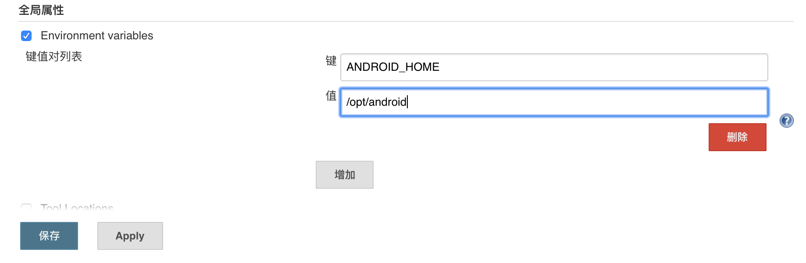
Gradle
在 系统管理->Global Tool Configuration，找到 Gradle ，点击 新增 Gradle ，填入 name ，可以随便填，但是为了好记，还是写上版本号。这里 Gradle 的版本要根据自己项目使用的版本调整。
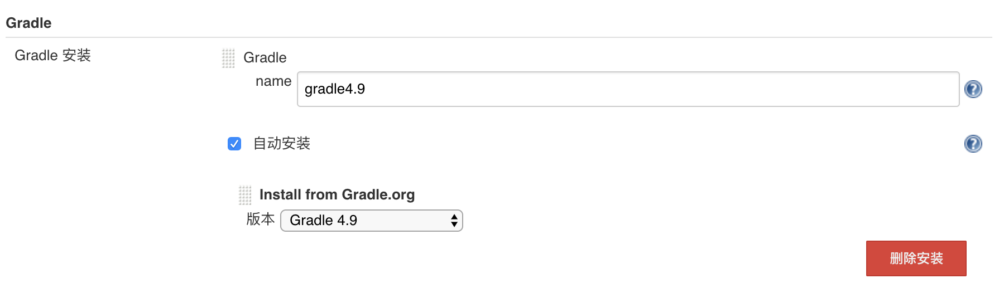
JDK
本来打包 Android 是需要 Java 环境的，所以需要安装 JDK ，但由于 Jenkins 就是用 Java 写的，所以 JDK 是安装好了的，如果你要用不同版本的 JDK ，和 Gradle 的安装方式一样，新建一个就好了，这里就不再啰嗦了。
命令行下打包 Android
自动化打包就是不需要人工操作，把打包的过程交给程序。Android 使用 Gradle 执行打包，所以通过执行 Gradle 命令就能打包 Android 应用。
在打包之前我们需要改造 app/build.gradle 使其能够打不同的渠道包
|
|
打开终端在项目的根目录输入如下指令，就可以打包
|
|
创建打包任务
做了这么多，是驴是马拿出来遛遛，看看可行不可行。
回到首页，点击新建，取个名字，选择构建一个自由风格的软件项目
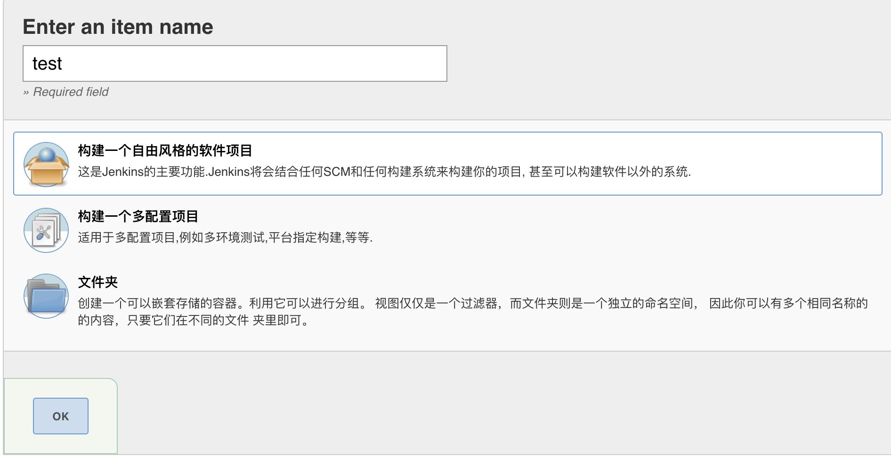
在参数化构建中填入 PRODUCT_FLAVORS 和 BUILD_TYPE
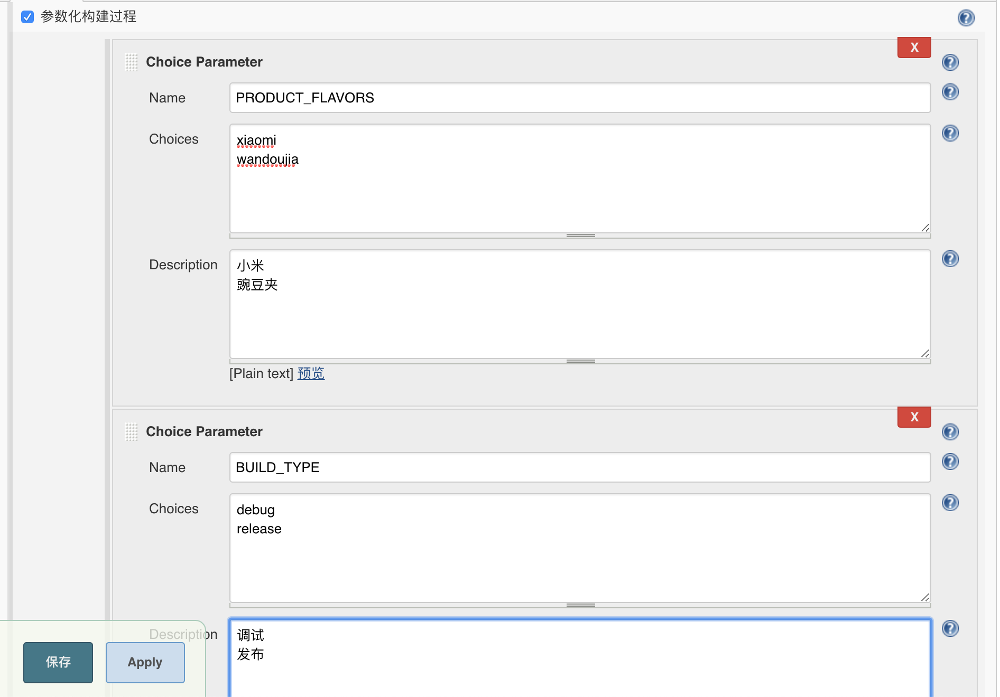
配置源码地址，然后点击 Add 添加证书（账号密码）
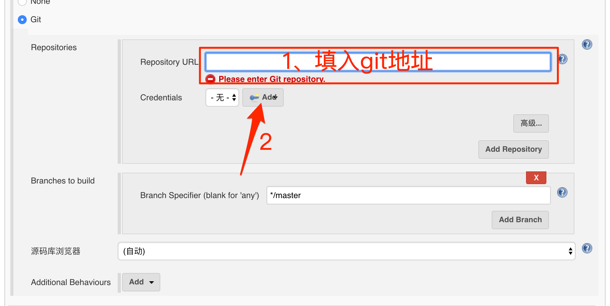
为了方便，这里直接使用账号密码的方式，填入 Git 的账号和密码
 在构建中点击增加构建步骤，选择
在构建中点击增加构建步骤，选择 Invoke Gradle Script
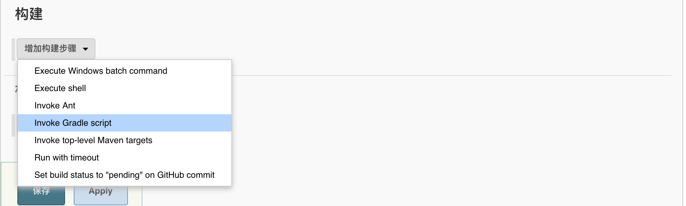
配置打包命令，在 Tasks 中填入 clean assemble${PRODUCT_FLAVORS}${BUILD_TYPE}
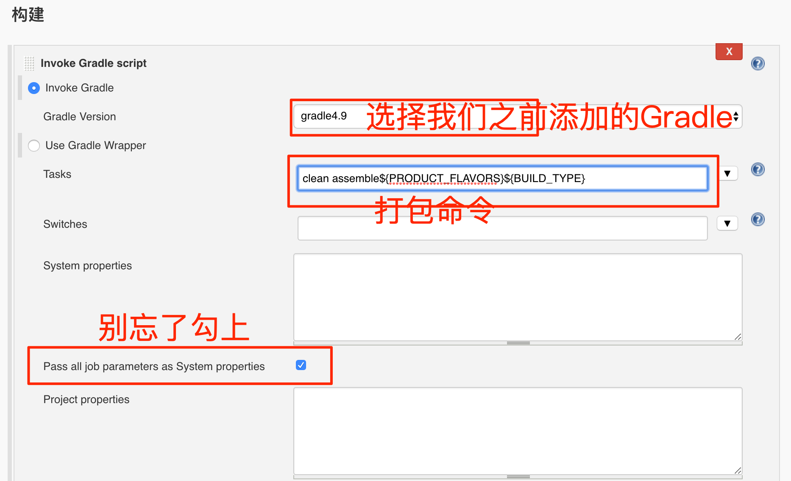
配好之后点击保存。
构建
进入建好的任务，点击 Build with Parameters
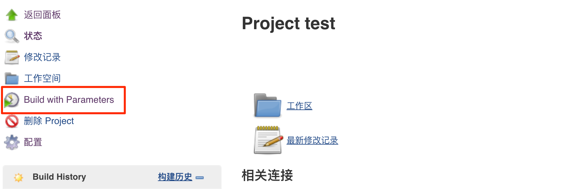
选择需要构建的 PRODUCT_FLAVORS 和 BUILD_TYPE 点击开始构建，等待一小会，项目就会构建成功。
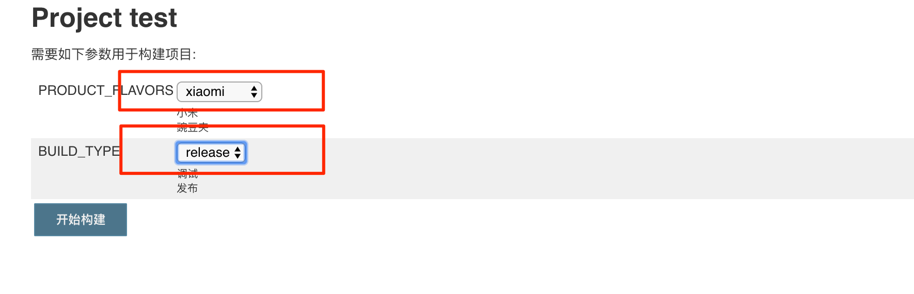
上传到蒲公英
项目构建成功后，要先发布到蒲公英， jenkins 有个插件叫 Upload to pgyer ，在打包完成后，帮我们把 apk 上传到蒲公英。
找到 系统管理->插件管理，在可选插件中找到 Upload to pgyer ，选择直接安装。
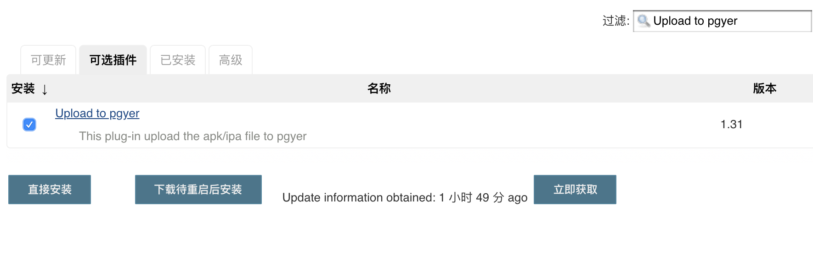
安装完成后回到刚刚新建的任务，在最后点击 增加构建后操作步骤 ，选择 Upload to pgyer with apiV1
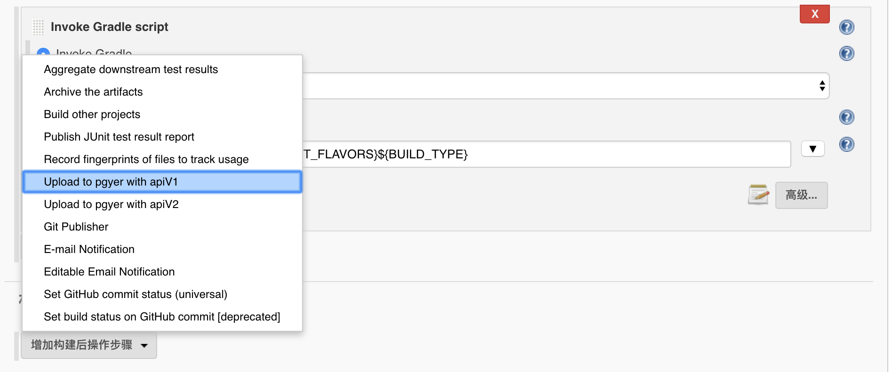
填入 uKey 、 api_key 、 scandir 、 file widcard 。其中 uKey 是 User Key， api_key 就是 API Key， scandir 是 apk 所在的目录， file widcard 是通配符，用来判断哪些文件要上传。
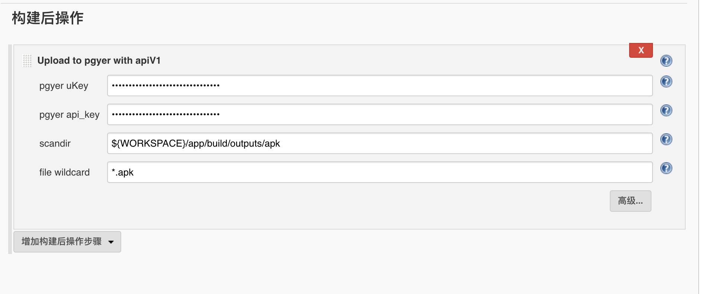
更新
软件用久了，要更新换代，不断有新版的出现，我们也要与时俱进。但是在 docker 中的 jenkins 都已经固定了难道要重新构建一个，这样会花很久。还有随着 Android 版本的升级 SDK 也在不断增加，这就要求我们要不断更新 docker 中的 Android SDK 。
Jenkins
jenkins 的更新只需要把 jenkins.war 给替换成新版就可以了，非常的简单。
|
|
重启容器就可以看到最新的 jenkins 。
Android SDK
Android SDK 的升级和 dockerfile 中的一样，没有什么特别的，这里简单举个🌰。
|
|